Lijiang
在纳西古镇的时光，是一首慢节奏的诗
2026.6.11 云南丽江
丽江的空气里总有一种让人慢下来的魔力。清晨的束河古镇，青石板路被露水打湿，远处的雪山在阳光下若隐若现。
在这里，不需要攻略，只需要漫无目的地行走。坐在咖啡馆里，看着云卷云舒，那一刻仿佛与世隔绝。
毕业旅行的第一站，我在最舒服的季节来到了丽江。
这是我人生中第一次踏上海拔如此之高的土地。从飞机舷窗望出去，连绵的雪山赫然出现在脚下，那种从未见过的壮阔景象，让抑制不住的兴奋一路伴随着我落地。
第一天去了丽江古城和白沙古城，吃了纳西族的传统美食。这里的一切好像自带滤镜，强大的紫外线让天上的乌云也掩盖不住，灿烂地洒在整个城市里，空气种都洋溢着幸福感。
原本计划第二天一早去玉龙雪山看“日照金山”，结果夜里下起了大雨。民宿老板劝我们别抱希望，可我们偏偏不信邪——凌晨五点，天还漆黑，我们还是跳上了开往雪山的路。
没想到，就在日出时分，天空突然放晴，云层散尽。更惊喜的是，因为前一夜的雨，原本在夏季显得有些光秃的雪山顶上，竟重新覆上了一层崭新的积雪。金色的晨光洒在雪顶之上，流光溢彩，熠熠生辉。那一刻，真的美到让人失语。
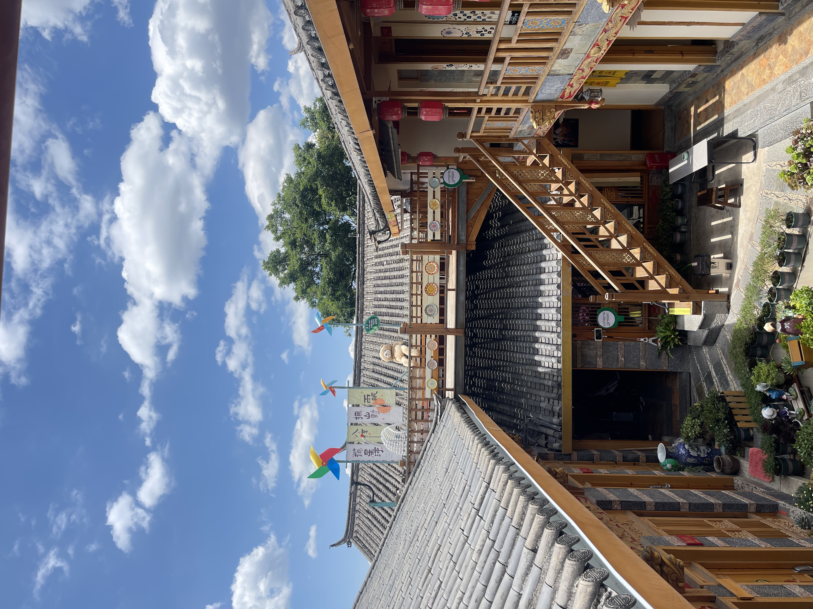
带小院子的民宿
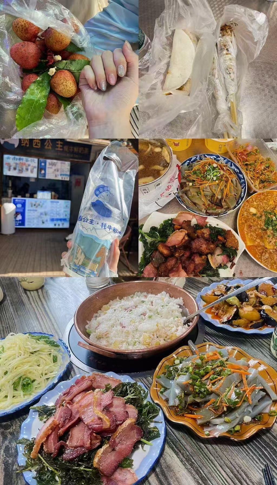
纳西风情美食
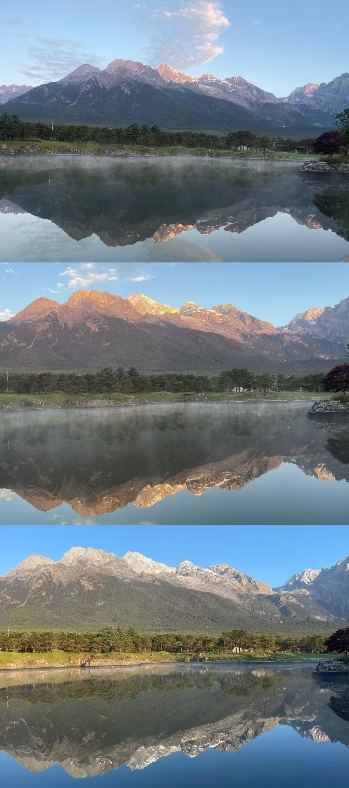
日照金山
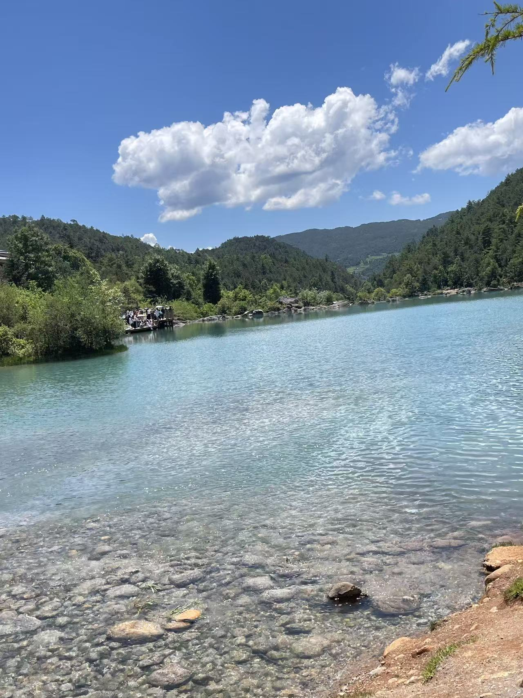
蓝月谷

牦牛坪
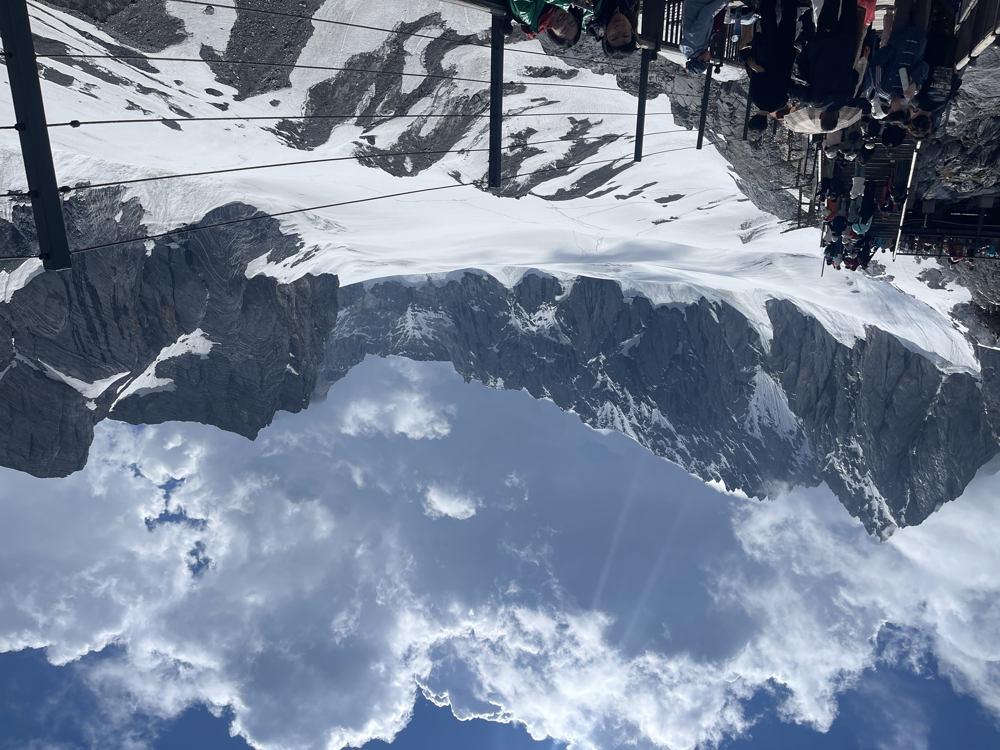
玉龙雪山
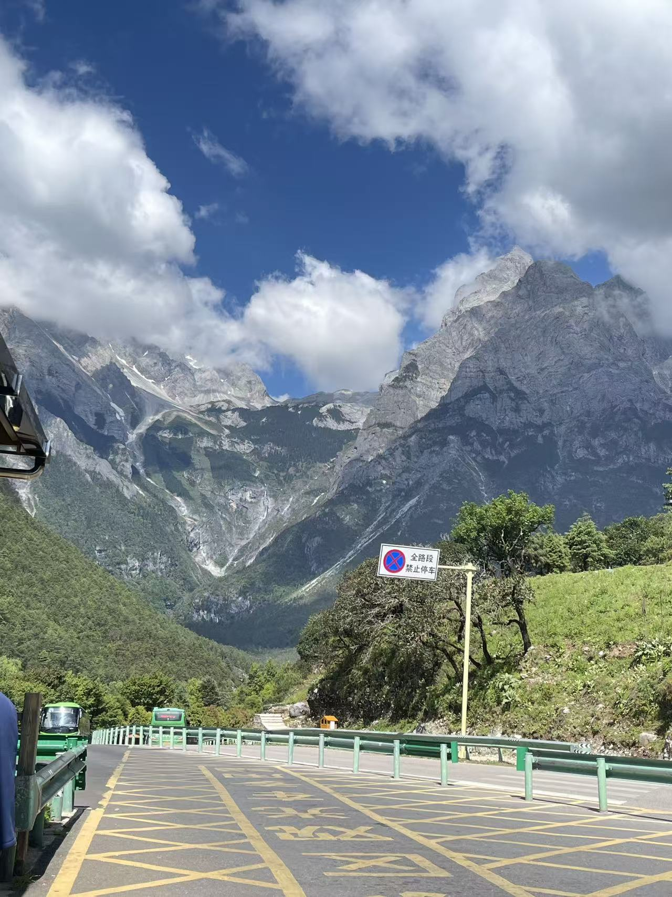
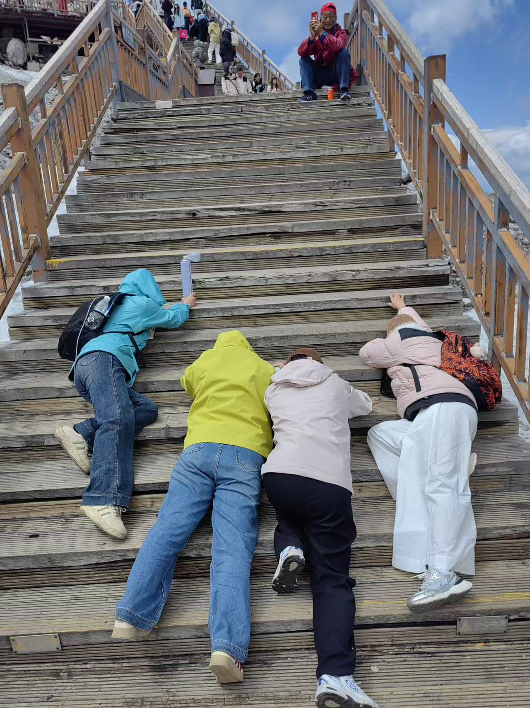
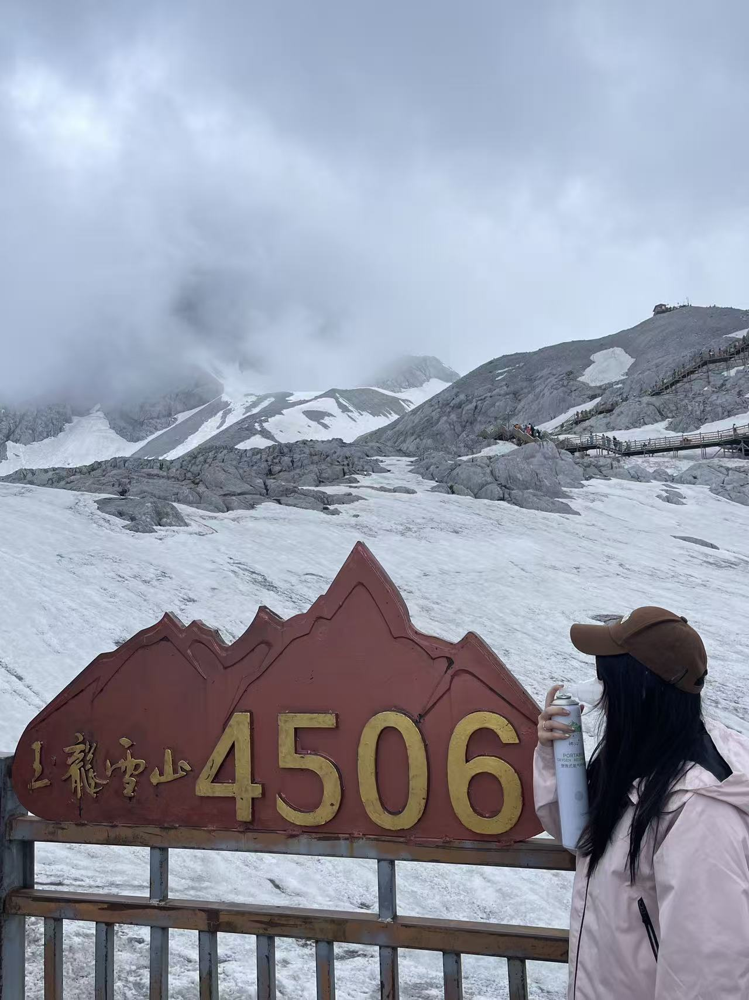
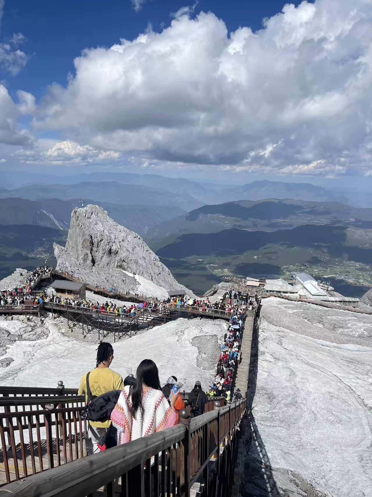
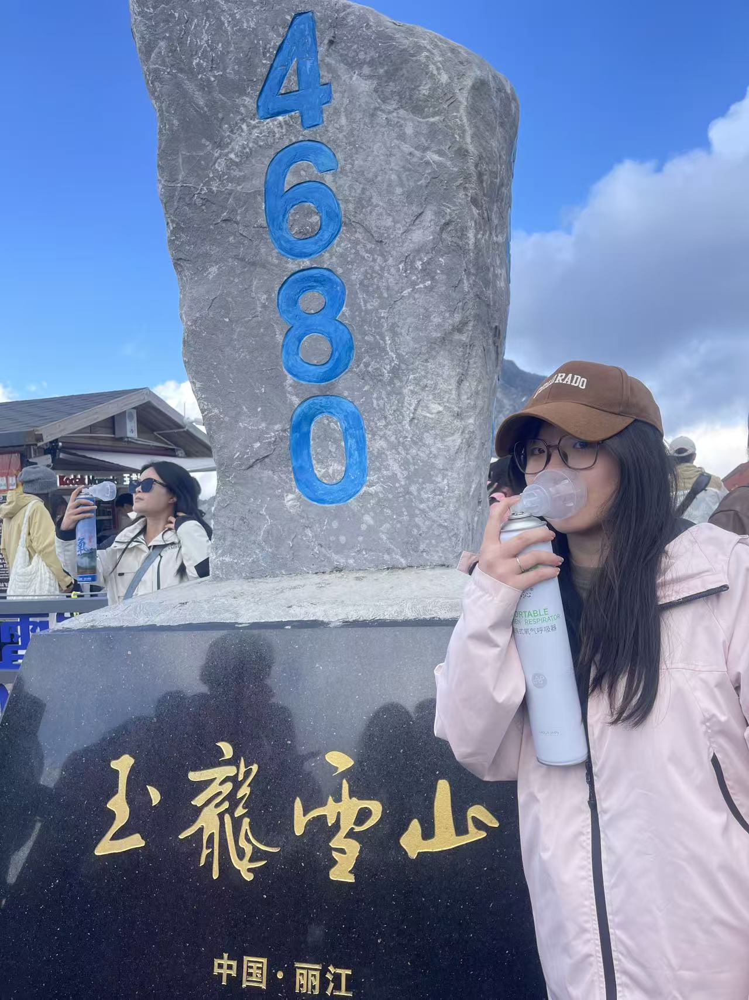
登顶了!4680米
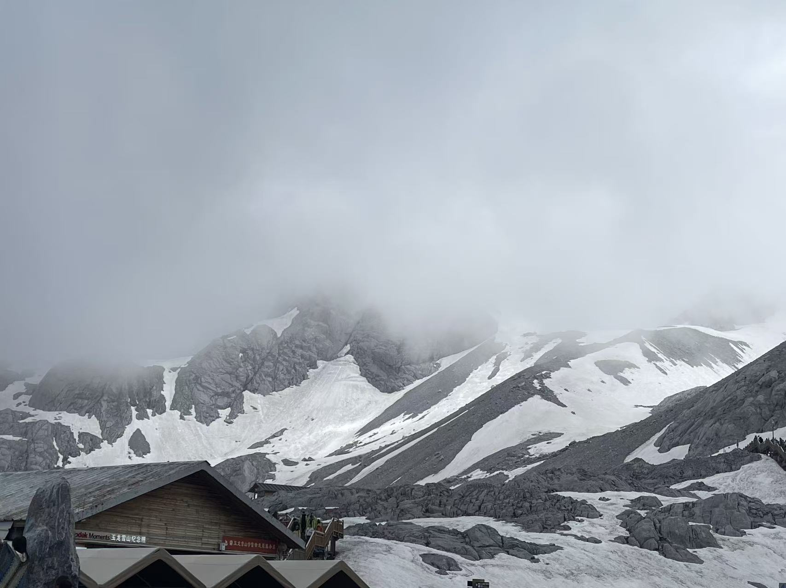